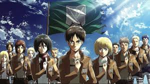
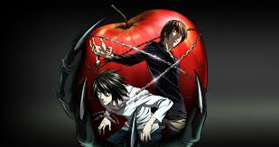

Anime is a style of animated film and television entertainment originating in Japan, known for its colorful visuals, imaginative themes, and diverse genres.
My Favorite Animes
Here are my top 3 favorite animes.
- One Piece
- Attack On Titan
- Death Note
One Piece
One Piece is a long-running anime and manga series about Monkey D. Luffy, a pirate searching for the legendary treasure called "One Piece" to become the Pirate King. It was created by Eiichiro Oda.
Attack on Titan
Attack on titan is a masterpiece by Hajime Isayama. It is about humanity fighting giant man-eating Titans. It follows Eren Yeager battle for survival and truth.
Death Note
Death Note is a dark psychological anime based on the manga by Tsugumi Ohba and Takeshi Obata. It follows Light Yagami, a student who finds a supernatural notebook that lets him kill anyone by writing their name, sparking a tense battle of wits with the genius detective L.
This is a fan made trailer on youtube. This is just to represent how anime looks like.
Click here